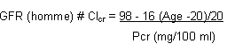

RÉSUMÉ DES CARACTÉRISTIQUES DU PRODUIT
ANSM - Mis à jour le : 04/05/2007
CARBOPLATINE CTRS 10 mg/ml, solution pour perfusion
2. COMPOSITION QUALITATIVE ET QUANTITATIVE
Carboplatine ...................................................................................................................................... 10 mg
Pour 1 ml.
1 flacon de 5 ml contient 50 mg de carboplatine.
1 flacon de 15 ml contient 150 mg de carboplatine.
1 flacon de 45 ml contient 450 mg de carboplatine.
Pour la liste complète des excipients, voir rubrique 6.1.
Solution injectable pour perfusion.
4.1. Indications thérapeutiques
· Carcinome de l'ovaire d'origine épithéliale.
· Carcinome bronchique à petites cellules.
· Carcinome épidermoïde des voies aérodigestives supérieures.
4.2. Posologie et mode d'administration
Monochimiothérapie:
La posologie recommandée de carboplatine chez les malades non pré-traités antérieurement par une chimiothérapie cytotoxique et dont la fonction rénale est normale est de 400 mg/m2, injectés par perfusion intraveineuse de brève durée (15 à 60 min.). Le traitement ne devrait pas être répété avant un délai de 3 à 4 semaines, après l'administration précédente du carboplatine et/ou tant que le nombre de neutrophiles n'est pas supérieur ou égal à 2 000/mm3 et le nombre de plaquettes à 100 000/mm3.
Une diminution de 20 à 25% de cette posologie initiale peut être recommandée chez les malades présentant des facteurs de risque tels qu'une chimiothérapie antérieure ou un mauvais état général. Les modifications éventuelles de posologie seront déterminées par la surveillance régulière des paramètres hématologiques.
Polychimiothérapie:
Les doses de carboplatine seront modifiées en fonction des toxicités, en particulier rénales et hématologiques, des autres produits utilisés.
Insuffisance rénale:
La détermination de la posologie optimale de carboplatine, en monochimiothérapie, requiert une surveillance régulière des paramètres hématologiques et rénaux. Les posologies recommandées chez l'insuffisant rénal sont les suivantes:
|
Monochimiothérapie |
|
|
Clairance de la créatinine (ml/min.) |
Posologie (mg/m2) |
|
41-60 ml/min. |
250 mg/m2 |
|
20-40 ml/min. |
200 mg/m2 |
|
< 20 ml/min. |
données insuffisantes pour recommander une posologie |
Autres méthodes de détermination de posologie (en mono ou polychimiothérapie, y compris dans le cas d'insuffisance rénale):
L'adaptation individuelle des posologies de carboplatine peut aussi être approchée en utilisant la formule de Calvert ou la formule d'Egorin.
· La formule de Calvert tient compte du débit de filtration glomérulaire (GFR en ml/min.) et de l'aire sous la courbe (AUC en mg/ml x min.):
Dose (mg) = AUC x (GFR + 25)
(la formule de Calvert calcule la dose totale en mg, et non en mg/m2).
La méthode de référence pour déterminer le débit de filtration glomérulaire (GFR) est la mesure de la clairance à l'EDTA marqué au chrome 51 qui implique la manipulation de produits radioactifs. En pratique, on estime que le débit est correctement évalué par la clairance de la créatinine (Clcr), elle-même estimée grâce à la méthode prédictive de Jeliffe qui tient compte de l'âge, du sexe et de la créatininémie plasmatique (Pcr):

GFR (femme) = 0,9 x GFR (homme)
Les AUC cibles sont fonction des éventuels traitements antérieurs et du protocole thérapeutique selon que le carboplatine est utilisé seul ou en association:
|
AUC cible |
Chimiothérapie envisagée |
Traitement antérieur |
|
6 - 8 mg/ml x min. |
carboplatine en monothérapie |
patient non pré-traité |
|
4 - 6 mg/ml x min. |
carboplatine en monothérapie |
patient pré-traité |
|
4 - 6 mg/ml x min. |
carboplatine en association |
patient non pré-traité |
Remarque: les valeurs d'AUC ont été validées pour le carboplatine en association avec le cyclophosphamide chez les patients non pré-traités et avec l'étoposide chez les patients pré-traités et non pré-traités.
· La formule d'Egorin calcule la dose totale en mg/m2:
Patient non pré-traité par chimiothérapie:
|
|
Patient pré-traité par chimiothérapie:
|
|
Enfant:
Dans l'état actuel des connaissances, il n'est pas possible de recommander une posologie particulière pour l'utilisation pédiatrique du carboplatine.
Mode d'administration
Voie d'administration: perfusion intraveineuse.
Les différents dosages de carboplatine peuvent être administrés tels quels à la concentration de 10 mg/ml en dérivation d'une perfusion de solution de glucose à 5%. Ils peuvent aussi être dilués avant administration à l'aide d'une solution de glucose à 5%, jusqu'à une concentration minimale de 0,5 mg/ml. Dans tous les cas, il est recommandé après perfusion de carboplatine de rincer la veine avec une solution de glucose à 5%.
En cas d'extravasation, l'administration sera interrompue immédiatement.
Remarque:
Aucun des composants nécessaires à l'administration intraveineuse par perfusion du carboplatine ne doit contenir en totalité ou en partie de l'aluminium. En effet, une interaction entre l'aluminium et le platine serait responsable d'un précipité noir que l'on pourrait observer après reconstitution de la solution.
Modalités de manipulation
|
La préparation des solutions injectables de cytotoxiques doit être obligatoirement réalisée par un personnel spécialisé et entraîné ayant une connaissance des médicaments utilisés, dans des conditions assurant la protection de l'environnement et surtout la protection du personnel qui manipule. Elle nécessite un local de préparation réservé à cet usage. Il est interdit de fumer, de manger, de boire dans ce local. Les manipulateurs doivent disposer d'un ensemble de matériel approprié à la manipulation notamment blouses à manches longues, masques de protection, calot, lunettes de protection, gants à usage unique stériles, champs de protection du plan de travail, conteneurs et sacs de collecte des déchets. Les excréta et les vomissures doivent être manipulés avec précaution. Les femmes enceintes doivent être averties et éviter la manipulation des cytotoxiques. Tout contenant cassé doit être traité avec les mêmes précautions et considéré comme un déchet contaminé. L'élimination des déchets contaminés se fait par incinération dans des conteneurs rigides étiquetés à cet effet. |
Ces dispositions peuvent être envisagées dans le cadre du réseau de cancérologie (circulaire DGS/DH/98 N° 98/188 du 24 mars 1998) en collaboration avec toute structure adaptée et remplissant les conditions requises.
Ce médicament est contre indiqué dans les situations suivantes:
· insuffisance rénale sévère (clairance de la créatinine < 20 ml/min.).
· antécédent d'allergie au carboplatine ou à d'autres produits contenant du platine.
· en association avec le vaccin contre la fièvre jaune,
· au cours de la grossesse.
L'allaitement contre-indique l'utilisation du carboplatine.
Ce médicament est généralement déconseillé dans les situations suivantes:
· hypoplasie médullaire sévère et/ou tumeurs hémorragiques,
· en association avec les vaccins vivants atténués et la phénytoïne.
4.4. Mises en garde spéciales et précautions d'emploi
Mises en garde spéciales
L'activité myélotoxique du carboplatine est dose dépendante et inversement proportionnelle à la clairance rénale du produit. Elle peut être majorée, en cas d'altération de la fonction rénale du patient, par la prescription concomitante de thérapeutiques néphrotoxiques et/ou susceptibles de produire une hypoplasie médullaire, l'existence de chimiothérapies antérieures et le mauvais état général du malade. Ceci nécessite une adaptation des posologies et des rythmes d'administration.
Une thrombopénie, une leucopénie et/ou une anémie cumulative peuvent survenir après administration de carboplatine, justifiant une surveillance régulière des paramètres hématologiques (cf. Précautions d'emploi) et nécessitant très rarement une transfusion.
Précautions d'emploi
Les paramètres hématologiques doivent être contrôlés avant chaque cure et dans l'intervalle des cycles. Le nadir de la leucopénie se situe au 21ème jour (entre le 14ème et le 28ème), tandis que celui de la thrombopénie se situe au 15ème jour (entre le 14ème et le 21ème) après le traitement. Si le nombre des globules blancs est inférieur à 2 000/mm3 ou si le nombre des plaquettes est inférieur à 100 000/mm3, le traitement par le carboplatine doit être retardé. La correction des anomalies hématologiques se fait habituellement 5 à 6 semaines après l'administration du produit.
La toxicité rénale n'est habituellement pas un facteur limitant la posologie du carboplatine. Du fait de son élimination par filtration glomérulaire, des mesures préventives à type d'hyperhydratation et de diurèse forcée ne sont pas nécessaires. Néanmoins, des anomalies portant sur l'azotémie ou la créatininémie ont été observées chez respectivement 14% et 6% des malades.
De même, la clairance de la créatinine devient inférieure à 60 ml/min., chez 27% des malades pré-traités. Ce point est à prendre en compte lors d'un traitement concomitant avec des thérapeutiques néphrotoxiques.
La fréquence et l'intensité de la néphrotoxicité sont d'autant plus importantes que la fonction rénale était altérée avant le traitement.
Les altérations de la fonction rénale sont en règle générale rapidement réversibles. Une modification des doses, voire une interruption du traitement, sont à envisager en présence d'une insuffisance rénale sévère.
La neurotoxicité est rare, généralement limitée à des paresthésies ou à une diminution des réflexes ostéotendineux. La fréquence et l'intensité de ces manifestations sont plus importantes chez les malades de plus de 65 ans et/ou ayant été traités au préalable par le cisplatine pour lesquels une surveillance neurologique régulière est recommandée.
Comme avec d'autres médicaments à base de platine, des réactions allergiques apparaissant dans les minutes suivant l'administration peuvent se produire et nécessiter un traitement approprié.
La manipulation et la reconstitution du carboplatine par le personnel médical nécessitent les précautions d'utilisation indispensables pour tout agent cytotoxique (cf. Modalités de manipulation).
4.5. Interactions avec d'autres médicaments et autres formes d'interactions
INTERACTIONS COMMUNES A TOUS LES CYTOTOXIQUES:
En raison de l'augmentation du risque thrombotique lors des affections tumorales, le recours à un traitement anticoagulant est fréquent. La grande variabilité intra-individuelle de la coagulabilité au cours de ces affections, à laquelle s'ajoute l'éventualité d'une interaction entre les anticoagulants oraux et la chimiothérapie anticancéreuse, imposent, s'il est décidé de traiter le patient par anticoagulants oraux, d'augmenter la fréquence des contrôles de l'INR.
+ Vaccin contre la fièvre jaune
Risque de maladie vaccinale généralisée mortelle.
+ Phénytoïne, fosphénytoïne
Risque de survenue de convulsions par diminution de l'absorption digestive de la phénytoïne par le cytotoxique, ou bien risque de majoration de la toxicité ou de perte d'efficacité du cytotoxique par augmentation de son métabolisme hépatique par la phénytoïne.
+ Vaccins vivants atténués (sauf fièvre jaune).
Risque de maladie vaccinale généralisée éventuellement mortelle.
Ce risque est majoré chez les sujets déjà immunodéprimés par la maladie sous-jacente.
Utiliser un vaccin inactivé lorsqu'il existe (poliomyélite).
Associations à prendre en compte
+ Ciclosporine (décrit pour doxorubicine, étoposide)
Immunodépression excessive avec risque de lymphoprolifération.
+ Tacrolimus (par extrapolation à partir de la ciclosporine).
Immunodépression excessive avec risque de lymphoprolifération.
INTERACTIONS SPECIFIQUES AU CARBOPLATINE:
Associations à prendre en compte
+ Aminosides (voie parentérale).
Addition des effets néphrotoxiques et ototoxiques, notamment en cas d'insuffisance rénale préalable.
Les propriétés mutagène, embryotoxique et tératogène mises en évidence dans les espèces animales et/ou in vitro font contre-indiquer l'utilisation du carboplatine au cours de la grossesse.
L'allaitement contre-indique l'utilisation du carboplatine.
4.7. Effets sur l'aptitude à conduire des véhicules et à utiliser des machines
Sans objet.
La fréquence des effets indésirables rapportés ci-dessous a été établie à partir de données obtenues chez 1893 malades ayant reçu du carboplatine en monothérapie aux doses recommandées. Parmi eux, 20% avaient été pré-traités par cisplatine et 30% par une chimiothérapie ne comportant pas de sels de platine.
Myélotoxicité
· Thrombopénie: plaquettes inférieures à 50 000/mm3 chez 25% des malades avec un nadir au 21eme jour. La normalisation est intervenue dans un délai moyen de 35 jours après le début du traitement.
· Leucopénie: leucocytes inférieurs à 2 000/mm3 chez 14% des malades avec un nadir au 21eme jour. La normalisation est intervenue dans un délai moyen de 42 jours après le début du traitement.
· Neutropénie: neutrophiles inférieurs à 1 000/mm3 chez 18% des malades avec un nadir au 21eme jour.
· Anémie: taux d'hémoglobine inférieur ou égal à 8 g/dl observé chez 15% des malades.
Cette anémie cumulative réversible a été plus sévère chez les patients pré-traités.
Des complications infectieuses ou hémorragiques ont été signalées respectivement chez 4 et 5% des malades. Elles ont été à l'origine d'un décès dans 1% des cas.
La myélotoxicité peut s'avérer plus sévère dans les cas suivants:
· patients pré-traités,
· insuffisance rénale,
· indice de performance bas,
· âge supérieur à 65 ans,
· association à des traitements eux-mêmes myélotoxiques.
La myélotoxicité est habituellement réversible.
Néphrotoxicité
Une augmentation de l'urée sanguine, de l'uricémie et de la créatininémie a été observée chez respectivement 14%, 5% et 6% des malades. Une diminution de la clairance de la créatinine inférieure à 60 ml/min. s'observe chez 27% des malades ayant reçu un traitement antérieur. Ces anomalies peuvent être plus importantes et plus fréquentes lorsque la fonction rénale est déjà perturbée avant le traitement par le carboplatine mais elles sont en règle générale rapidement réversibles.
Une réduction (< limite inférieure de la normale) des taux sériques de sodium, potassium, calcium, et magnésium a été observée chez respectivement 29%, 20%, 22%, et 29% des malades avec en particulier quelques cas d'hyponatrémie précoce; néanmoins, ces anomalies n'ont jamais été suffisamment marquées pour être responsables de manifestations cliniques.
Toxicité gastro-intestinale
Des troubles digestifs à type de nausées, vomissements, tous grades confondus, ont été observés chez 80% des malades. Dans 22% des cas, il s'agissait des grades III-IV.
Nausées et vomissements peuvent être contrôlés, voire prévenus, par un traitement antiémétique approprié. Enfin, ces phénomènes disparaissent habituellement dans les 24 heures suivant le traitement.
Les autres effets gastro-intestinaux rapportés correspondaient à des douleurs chez moins de 8% des malades, à des diarrhées, une constipation chez 6% des malades.
Ototoxicité
A l'audiogramme, on retrouve des anomalies dans la gamme des hautes fréquences (4 000 à 8 000 Hz) chez 15% des malades. De très rares cas d'hypoacousie ont été rapportés.
De telles anomalies, lorsqu'elles sont le fait d'un traitement antérieur par le cisplatine, peuvent persister ou s'aggraver chez les malades ayant reçu le carboplatine en seconde intention.
Neurotoxicité
Des neuropathies périphériques s'observent chez 4% des malades; cependant, dans un très grand nombre de cas, elles ne se traduisent que par des paresthésies et une diminution des réflexes ostéotendineux. La fréquence et l'intensité de ces anomalies augmentent chez les malades préalablement traités par le carboplatine ainsi que chez les malades âgés de plus de 65 ans.
Des troubles sensoriels, troubles de la vision, troubles du goût (dysgueusie) ont été rapportés chez 1% des patients.
Réactions allergiques
Le carboplatine est responsable de réactions allergiques chez moins de 2% des malades. Ces réactions sont identiques à celles que l'on peut observer après administration d'autres dérivés du platine: éruption érythémateuse, fièvre sans cause apparente, prurit, rash, urticaire, plus rarement bronchospasme et hypotension.
Autres effets indésirables
Des anomalies modérées (Normales x 1,25) des paramètres de la fonction hépatique ont été observées. Il s'agit d'élévations des phosphatases alcalines chez 24% des malades, et, plus rarement, des SGOT, des SGPT (15%) et de la bilirubine totale (5% des malades). Pour la plupart, elles ont régressé spontanément malgré la poursuite du traitement par le carboplatine.
Enfin, chez moins de 2% des malades au total, on a observé: alopécie, fièvre et frissons.
En cas de surdosage, on doit s'attendre à ce que les effets secondaires soient exagérés. Il faut donc surveiller de façon stricte les fonctions hématologiques, rénales et auditive afin de guider la thérapeutique symptomatique.
Des troubles visuels réversibles, incluant une diminution de la vision, ont été observés chez des patients insuffisants rénaux avec des doses administrées supérieures à celles recommandées. De sévères anomalies des fonctions rénale et hépatique ont été observées pour des posologies 5 fois supérieures ou plus à celles recommandées.
5. PROPRIETES PHARMACOLOGIQUES
5.1. Propriétés pharmacodynamiques
Classe pharmacothérapeutique: AUTRES ANTINEOPLASIQUES, Code ATC: L01XA02.
(L: Antinéoplasique et immunomodulateur).
Le carboplatine est un cytostatique dont les propriétés biochimiques sont similaires à celles du cisplatine.
Le carboplatine se fixe sur la molécule d'ADN en produisant des liaisons alkyles responsables de la formation de ponts entre les deux chaînes de la molécule ou entre les chaînes de deux molécules d'ADN adjacentes. La synthèse par réplication et la séparation ultérieure de l'ADN sont ainsi inhibées, de même que, secondairement, les synthèses de l'ARN et des protéines cellulaires.
5.2. Propriétés pharmacocinétiques
Après l'injection d'une dose de carboplatine variant de 300 à 500 mg/m2 chez des patients présentant une clairance de la créatinine ≥ 60 ml/min., on observe une relation linéaire entre la dose administrée, la concentration plasmatique de platine total et de platine sous forme libre ultrafiltrable. L'aire sous la courbe des concentrations plasmatiques de platine total et ultrafiltrable montre également une relation linéaire avec la dose administrée. Aucune accumulation de platine dans le plasma n'a été mise en évidence lors d'une administration de carboplatine répétée pendant 4 jours consécutifs.
Après administration de carboplatine (300 à 500 mg/m2), les demi-vies d'élimination alpha et bêta sont en moyenne respectivement de 1,6 heure, et de 3 à 6 heures chez les patients présentant une clairance de la créatinine ≥ 60 ml/min.,
Pendant la phase initiale, la plus grande partie du platine libre ultrafiltrable est présente sous forme de carboplatine. La demi-vie d'élimination du platine plasmatique total est de 5 jours.
24 heures après l'administration de carboplatine, environ 87% du platine plasmatique est lié aux protéines plasmatiques.
Le carboplatine est excrété principalement dans les urines, sous forme inchangée, et l'on retrouve, 12 à 16 heures après l'administration, à peu près 70% de la dose de platine total.
95% de la dose administrée est excrétée avant la 25ème heure.
Les clairances totale et rénale de platine libre ultrafiltrable sont fonction de la filtration glomérulaire.
5.3. Données de sécurité préclinique
Sans objet.
Eau pour préparations injectables, solution concentrée d'ammoniaque.
Le carboplatine présente une incompatibilité physique avec tout matériel d'injection intraveineuse contenant de l'aluminium (voir rubrique 4.2).
20 mois.
6.4. Précautions particulières de conservation
Avant dilution:
A conserver à une température ne dépassant pas +25°C.
Après dilution:
D'un point de vue microbiologique, le produit doit être utilisé immédiatement. En cas d'utilisation non immédiate, les durées et conditions de conservation après dilution et avant utilisation relèvent de la seule responsabilité de l'utilisateur.
6.5. Nature et contenu de l'emballage extérieur
5 ml en flacon de 20 ml (verre incolore de type I) avec bouchon (bromobutyl) et capsule (Aluminium/Polypropylène).
15 ml en flacon de 20 ml (verre incolore de type I) avec bouchon (bromobutyl) et capsule (Aluminium/Polypropylène).
45 ml en flacon de 50 ml (verre incolore de type I) avec bouchon (bromobutyl) et capsule (Aluminium/Polypropylène).
6.6. Précautions particulières d’élimination et de manipulation
La manipulation de ce cytotoxique par le personnel infirmier ou médical nécessite un ensemble de précautions permettant d'assurer la protection du manipulateur et de son environnement (voir rubrique 4.2).
Toute fraction non utilisée doit être éliminée.
7. TITULAIRE DE L’AUTORISATION DE MISE SUR LE MARCHE
CTRS (Cell Therapies Research and Services)
Route de la Ganne
36170 Saint Benoit du Sault
8. NUMERO(S) D’AUTORISATION DE MISE SUR LE MARCHE
· 566 753-6: 5 ml en flacon (verre).
· 566 754-2: 15 ml en flacon (verre).
· 566 755-9: 45 ml en flacon (verre).
9. DATE DE PREMIERE AUTORISATION/DE RENOUVELLEMENT DE L’AUTORISATION
[à compléter par le titulaire]
10. DATE DE MISE A JOUR DU TEXTE
[à compléter par le titulaire]
Sans objet.
12. INSTRUCTIONS POUR LA PREPARATION DES RADIOPHARMACEUTIQUES
Sans objet.
Liste I.
Médicament soumis à prescription hospitalière. Prescription réservée aux spécialistes en oncologie ou en hématologie ou aux médecins compétents en cancérologie. Médicament nécessitant une surveillance particulière pendant le traitement.